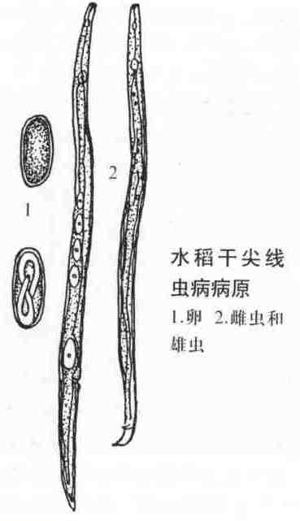

水稻干尖线虫病
病害别名：白尖病、线虫心枯
为害部位：叶片及穗部
病害性质：一般病害
病原：水稻干尖线虫(AphelenchoidesbesseyiChristie)水稻干尖线虫病病原
病害表现：主要危害叶片及穗部.在水稻孕穗期，一般在剑叶或上部2－3片叶的尖端出现淡褐色半透明状病斑，后渐变成灰褐色、扭转状的干尖。病穗比健穗短而小，秕谷增加,千粒重降低。
 水稻干尖线虫病病叶
水稻干尖线虫病病叶
发病规律：以成虫和幼虫潜伏在稻谷的颖壳及米粒间越冬，主要靠种子传带传播。种子内线虫在浸种催芽时开始活动，由芽鞘、叶鞘缝隙侵人稻株体内,附着在生长点、叶芽、新生嫩叶的细胞外部，吸取细胞汁液，致使被害叶片长出后变成干尖状。.
病害防治: 1．加强植物检疫 应加强植物检疫工作严禁从病区引进种子。 2．建立无病留种田 种子田的排灌水系要配套，防止带线虫的水灌入。收获前进行种子检验，确保无病，然后单收、单打、单藏，留作种子用。3．种子消毒 一是将稻种在冷水中预浸24小时后，移人45－47℃温水中浸5分钟，再移人52－54℃温水中浸10分钟，立即冷却，催芽播种；二是用线菌灵600倍液浸种48小时，捞出冲净药液，催芽播种。